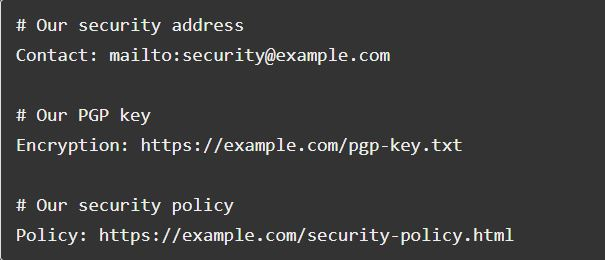
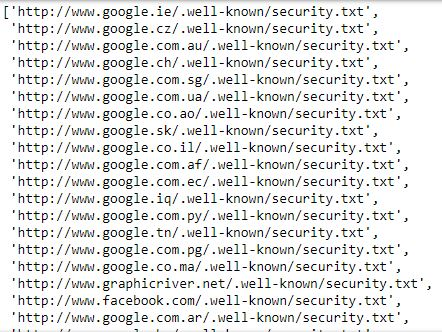

Analyzing 100,000 Security.txt Files
Posted on Tue 27 February 2018 in Python
There's a great initiative that's in its nascence right now in the security community - adding security.txt files to as many domains as possible.
Similar to a robots.txt file, a security.txt file aims to serve as an authoritative document that guides others in how to contact an organization regarding a vulnerability, data breach, or security incident.
The endeavor comes in the midst of a somewhat-murky security environment. Security researchers (and those who happen to stumble across something concerning) can be hesitant to disclose their findings fearing legal retaliation. And several have reported that when they've attempted to disclose their findings, they never received a response. A recent article by ZDnet explores this further, detailing the experiences from 11 different security researchers.
The RFC for security.txt documents - known formally as A Method for Web Security Policies - specifies six directives that should be presented to the public:
- Contact: an address (email, phone, etc.) for reporting security issues.
- Encryption: a link to the key for the organization's preferred method of encrypted communication.
- Signature: a link to an external signature.
- Policy: a link to the organization's security and/or disclosure policy.
- Acknowledgement: a link to a page where security researchers are recognized for their reports.
- Hiring: information on the organization's security-related job positions.

Taking inspiration from a blog I read a few months ago - Analyzing One Million Robots.txt Files - I thought I'd do something similar: check which sites from the Alexa Top One Million Websites have implemented security.txt files.
Checking the Alexa Top One Million
The author of the aforementioned blog chose to make the one million requests sequentially, noting that there were difficulties which prevented them from successfully .
My first thought was that it should be possible to parallelize these requests because we only need to hit each server once and blocking therefore shouldn’t be an issue. I was all ready to show off python’s shiny new asyncio features, and I put together a script that heavily parallelized the requests, but then quickly discovered that things weren’t so simple.
These were issues (read: memory) that I soon became all too familiar with, but I also had no intention to wait for 1,000,000 requests, one by one. Without spending more on resources (I used a Digital Ocean VPS with 4GB RAM/40GB SSD/4 vCPU), I resigned to testing the first 100,000.
Besides, with each new project, my goal is to explore something new in a manner I haven't done before, leading me to (finally) begin exploring concurrency and parallelism (and there is a difference). The implementation was quite simple, but I had to go down a few rabbit holes to fully grasp the concepts.
Alexa has made the list freely available from an Amazon S3 Bucket. Unzip the file to get the CSV.
Once we have the data, we can use python to:
- Read in the CSV file to a dataframe.
- Parse and clean the URLs to minimize HTTP errors.
- Thread our requests.
- Implement a simple scoring process for identifying security.txt pages.
- Write the results to disk.
The entire process took ~4,830.27 seconds (about 80 minutes) to complete for 100,000 sites.
from concurrent.futures import ThreadPoolExecutor, as_completed
from urllib.parse import urlparse
import pandas as pd
import requests
from tldextract import extract
CONNECTIONS = 1024
TIMEOUT = 60
RESULTS = []
DIRECTIVES = ['contact:', 'policy:', 'encryption:', 'acknowledgments:', 'signature:', 'hiring:']
def get_sites():
df = pd.read_csv('top-1m.csv', names=['Rank', 'Sites'])
urls = []
for url in df.Sites[:100000]:
domain_check = extract(url)
if domain_check.subdomain:
urls.append('http://{}/.well-known/security.txt'.format(url))
else:
urls.append('http://www.{}/.well-known/security.txt'.format(url))
return urls
def load_url(url, timeout):
resp = requests.get(url, timeout=timeout)
if resp.status_code == 200:
page = resp.text.lower()
score = 0
for d in DIRECTIVES:
if d in page:
score +=1
if score >= 2:
return url
return None
def main(urls):
with ThreadPoolExecutor(max_workers=CONNECTIONS) as executor:
futures = (executor.submit(load_url, url, TIMEOUT) for url in urls)
for future in as_completed(futures):
try:
RESULTS.append(future.result())
except Exception as exc:
RESULTS.append(str(type(exc)))
if __name__ == '__main__':
urls = get_sites()
main(urls)
with open('site_list.txt', 'w+') as outfile:
for res in RESULTS:
outfile.write(str(res)+'\n')
When ever I need to read in data from CSV files, I usually reach for the simplicity that the pandas library offers. After creating a dataframe, the tldextract library helps find which sites in our list have subdomains in them, allowing us to avoid building URLs with both www. and a subdomain (and thus avoiding a connection error).
The module's usage is simple:
>>> from tldextract import extract
>>> site = 'www.test.com'
>>> extract(site)
ExtractResult(subdomain='www', domain='test', suffix='com')
>>> site = 'alpha.test.com'
>>> extract(site)
ExtractResult(subdomain='alpha', domain='test', suffix='com')
>>> extract(site).domain
'test'
>>> extract(site).subdomain
'alpha'
We'll then pass the list of URLs to our main() function, where we'll use the ThreadPoolExecutor (and not the ProcessPoolExecutor class, since network requests are an I/O bound task) to send asynchronous requests to the 100,000 URLs. Threading allows the program to make other requests if another request hangs. Using a context manager (the with statement) ensures that threads are cleaned up promptly, as it will always call the executor's shutdown() method.
The task that we're submitting to the executor and creating futures with is our load_url() function, which sends a GET request to all of our URLs. Because we're sending our requests over HTTP and not HTTPS, we're going to allow for redirects, otherwise we may miss security.txt files that live on their secure counterparts. Let's look at Facebook for a quick example:
>>> import requests
>>> resp = requests.get('http://www.facebook.com/.well-known/security.txt')
>>> resp.status_code
200
>>> resp = requests.get('http://www.facebook.com/.well-known/security.txt', allow_redirects=False)
>>> resp.status_code
302
If a site returns a 200, we still need make sure it's a security.txt file, as some web servers are configured to redirect 404 requests to their home page or serve some other specific page.
The six directives (contact, encryption, signature, policy, acknowledgements, hiring) outlined in the RFC seem appripriate to check for. At a minimum, we know security.txt files MUST have the "Contact:" directive, but using that as our only condition still returns a few false positives (it's common to have something similar to "contact: example@domain.com" in HTML templates). Ultimately, if the page contains two or more of the directives we're looking for, the URL will be saved.
Calling the as_completed() method returns an iterator that yields futures as they complete (finished or were cancelled). In computer science, a future is a construct for synchronizing programming execution. Specifically, it represents a means for getting a value sometime in the future. [FOOTNOTE https://www.dartlang.org/tutorials/language/futures].
When the futures are returned by the as_completed() method, we try to get the result returned by the load_url() function (either the successful URL, or None), else we store the exception that occurred. It's important to note that calling the result() method on each future seems to be the most time consuming part of the program because it's a blocing method - the next line of code doesn't execute until the future's result is available.
Document Analysis
We'll also perform a little more analysis on the sites where we found security.txt files.
(Note: all of the below code could very well have been incorporated into the first program, but I prefer to separate the collection + analysis into separate processes. After all, troubleshooting is trivial when working with ~100 requests, and not quite so with 100k.)
from collections import Counter
from concurrent.futures import ThreadPoolExecutor, as_completed
from urllib.parse import urlparse
import requests
from tldextract import extract
with open('site_list.txt', 'r') as f:
results = [line.strip() for line in f.readlines()]
successful_sites = [res for res in results if urlparse(res).netloc]
Read in the saved results line by line, and then filter out None results and the saved exceptions. A quick look at successful_sites shows there are a lot of results for Google, but all of the security.txt documents served on the various TLDs are identical to the one hosted at "www.google.com/.well-known/security.txt". Similarly, there were several results for popular Tumblr pages, but there's really only one unique file.

We can quickly see the count for each:
>>> domains = [extract(site).domain for site in successful_sites]
>>> Counter(domains)['google']
176
>>> Counter(domains)['tumblr']
37
We'll handle this by creating a list which filters out these repeated domains, and then adding back in the Google and Tumblr root domains.
We're left with 62 unique_sites to work with, and once more we can use the concurrent.futures module to thread our requests. For each site, we'll download the page's text to count which directives have been most adopted by the current security.txt files.
Earlier, we used executor.submit() when we needed to return a URL, but executor.map() is more appropriate here because the check_site() method isn't returning anything (the executor's map method takes a function and an iterable and calls the function for each item in the iterable).
unique_sites = [site for site in successful if 'google' not in site if 'tumblr' not in site]
unique_sites.append('http://www.google.com/.well-known/security.txt')
unique_sites.append('http://www.tumblr.com/.well-known/security.txt')
directives = {
'contact:': 0,
'policy:': 0,
'encryption:': 0,
'acknowledgments:': 0,
'signature:': 0,
'hiring:': 0
}
def check_site(site):
resp = requests.get(site, timeout=60)
page = resp.text.lower()
for d in directives:
if d in page:
directives[d] += 1
with ThreadPoolExecutor(max_workers=10) as executor:
executor.map(check_site, unique_sites, timeout=60)
Our directives dictioniary contains our finaly count, which we can plot.
>>> directives
{'acknowledgments:': 8,
'contact:': 62,
'encryption:': 34,
'hiring:': 36,
'policy:': 50,
'signature:': 12}

As expected, the "contact:" field is the most common, followed by "policy:". What's interesting though, is "hiring:" as the third most common directive. This directive was only included in the third draft of the RFC and is already adopted more than other directives that were included in the earliest versions of the initiative. It's likely that organizations were independently including hiring information in their security.txt files, which caught on with those leading project.
Lessons Learned & Notes
Out of Memory (OOM)
As alluded to earlier, memory was the biggest issue I faced in getting off the 100k requests. In fact, the program would often die around 65-75% of the way through the requests as the memory usage continued to grow.
I found the Who "Killed" my process and why? thread on Stack Overflow particularly helpful in learing about the Linux kernel's OOM killer. It led to me to an article with a command that disables the kernel's OOM killer on a certain process (our main program), which did the trick:
$ echo -17 > /proc/$PID/oom_score_adj
I used $ ps aux | less to get the process ID ($PID in the above command) of the program.
Sockets
Asynchronous requests can be sped up by using more sockets, generally. CONNECTIONS in our main program is set to 1024 because that's the common default for open files (another tidbit - "everything in Unix is a file") on most operating systems.